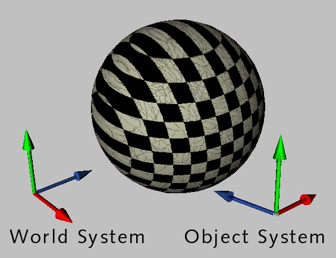
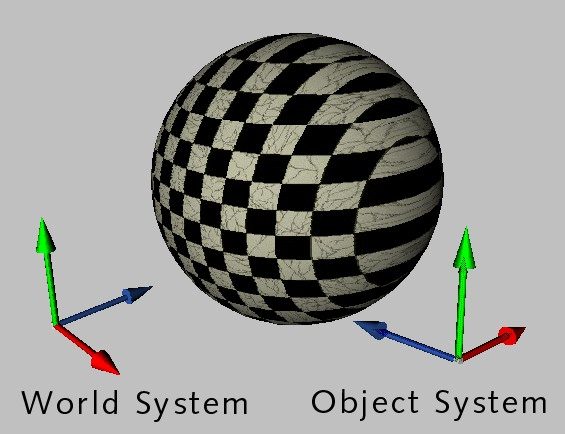

Texture Tag Menu
You can use this command to generate UVW coordinates. This is especially useful for imported objects that do not have UVW coordinates. UVW coordinates prevent a texture from slipping when you deform the object. You generate UVW coordinates starting from a normal projection mode such as Flat.
To generate UVW coordinates
The effect of UVW coordinates is demonstrated in the picture above. The object to the left uses Cubic mapping. The texture slips when the object is deformed. The texture for the object to the right does not slip since its original cubic mapping has been fixed in place with UVW coordinates.
You may use multiple Texture tags on an object, with each Texture tag assigned to a different UVW tag. To do this, add a new Texture tag to the object and set the desired projection type, such as flat mapping for a label. Next, choose Generate UVW coordinates. A new UVW geometry will be created and the selected Texture tag will switch over to UVW mapping so that the texture is fixed to the object’s surface.
Each time Generate UVW Coordinates is used, a new UVW tag will appear in the Object Manager. A Texture tag will use the first UVW tag that appears anywhere to the right of it in the tag list. If no UVW tag exists to the right of the Texture tag, then the Texture tag will use the first UVW tag on the tag list. In this way, different UVW tags can be assigned to different Texture tags.
See UVW tag.
Note also that faulty projections can result if the geometry of the object to which the texture is applied is not subdivided sufficiently. In such cases you should increase the object’s subdivision.
This command enables you to texture an object with several different projection types using a single UVW geometry and a single Texture tag.
To assign UVW coordinates
If the object has no UVW coordinates (i.e. no UVW tag), new coordinates are created automatically.
UVW tag option: Lock UVW
You may find that this option is enabled automatically when you import a scene from another program. The enabled option locks the UVW coordinates to prevent them being changed by BodyPaint 3D’s UV editing tools. This is useful for preventing accidental UVW changes.
If you select this command, the texture will be made to cover the object completely — the texture will have a length of 100% in both the X and Y directions.
You must apply your texture with Flat projection if you want to use this command. Type the name of an image into the dialog. Cinema 4D calculates the image’s X and Y resolution and scales the texture in the V direction to constrain its proportions. You can use this command to ensure that your texture uses the correct proportions, thereby avoiding distortion.
You must apply your texture with Flat projection if you want to use this command. Use the mouse to drag a box. Cinema 4D fits the projection to this box.
Adapt To Object Axis and Adapt To World Axis rotate the texture axes in such a way that they are parallel to the object axes or world axes.
Adapt to Object Axis. |
Adapt to World Axis. |
Adapt to View rotates the texture axes so that the texture is perpendicular to the viewing perspective. For a 3D viewport, this is the camera plane; for all other viewports, it is the work surface.
Mirror Horizontally flips the texture horizontally. This effect is the same as if you were to view the texture’s reflection in a real mirror.
Mirror Vertically flips the texture vertically, effectively turning the texture upside-down.